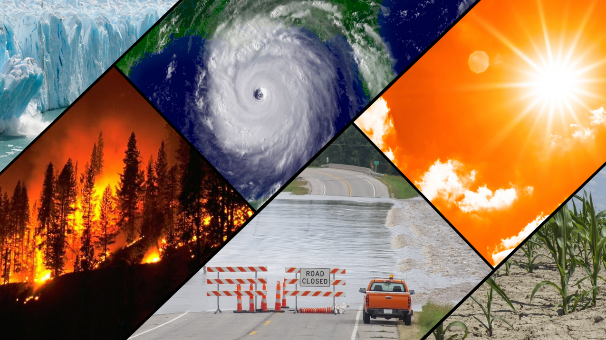
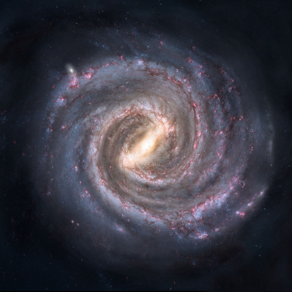
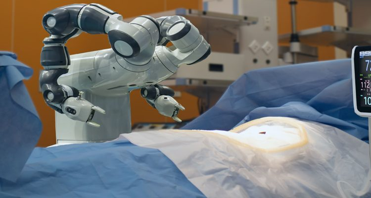

Technology in 2050
1.Robots In Every Household
In 2050,Almost every hoursehold will have a AI Robot which will do the household chores like Shopping and Cleaning.We may see robots as a more integral part of our daily routine.
Similarly,we may see machines that can interact with the world more, such as self-driving cars and digital assistants.

2.Personal Drones for everyone
A Personal Drone will be our next toy,just like cell phones.These have multiple uses some of them including shipping and delivering products,uses in journalism and assisting rescue teams.
Climate of World in 2050
Climate Changes
Climate change is and will continue to be one of the main drivers of change in this century.And when it comes to changes in our climate, the resulting impact will be significant, far-reaching, and will come in many forms.


Things Will get Worse
Between now and 2050, we will continue to see an increase in the environmental and climate-related hazards that are a major concern today.
These hazards are innumerable but can be broken down into five broad categories- Increased droughts,flooding and extreme weather,Icecaps melting and rising sea levels,Collapsing agriculture,Increased spread of diseases,Ecosystem disruption and species extinction.
According to the IPCC Fifth Assessment Report,average global temperatures will rise between 1.5 ºC to 2 ºC.South Asia will be in particular danger since four of the most heavily populated cities will be located there by 2050.
Space
Life on Mars
Mars will be colonised by humans by the year 2050, as long as autonomous mining processes quickly become more commercially viable.
Professor Saydam, from the School of Mineral Energy Resources Engineering, says the main focus in terms of creating a colony on Mars is finding water – and being able to extract it and process it using robots before humans land.
Future Of Outer Space Technology
By 2050, commercial space travel, space tourism, orbital space stations, and lunar habitats are likely to become a reality.Future space technologies will rely heavily on robotics and AI to assist human teams of astronauts.

Life beyond earth in 2050
In the next three decades, human beings will enter the realm of space like never before. This is due in part to the way that public interest in space exploration has been revitalized, thanks to a number of exciting missions that have been mounted since the turn of the century and growing public engagement through social media.
Changes In the Human Body by 2050
Life Expectancy Increased
Global life expectancy at birth has now topped 70 years for men, and 75 years for women. And the population living to 100 and older is predicted to grow to nearly 3.7 million by 2050, from just 95,000 in 1990.


Robots In Surgerys and Medical
Robotics will also shape the future of medicine.
With the massive volumes of medical data health authorities will have to contend with, advanced analytics and machine learning will be relied on to monitor it all. AIs will be used to analyze patient data for signs of possible health conditions and predict future ones.This will give health care practitioners the ability to detect problems in advance and diagnose cases with greater speed and efficiency.
Patient histories will also be much detailed, and real-time patient monitoring will be readily available for the elderly and people who are at-risk for stroke, heart attack, etc.
Surgical robots can perform extremely precise operations, and with advances in AI, could eventually carry out surgeries independently.